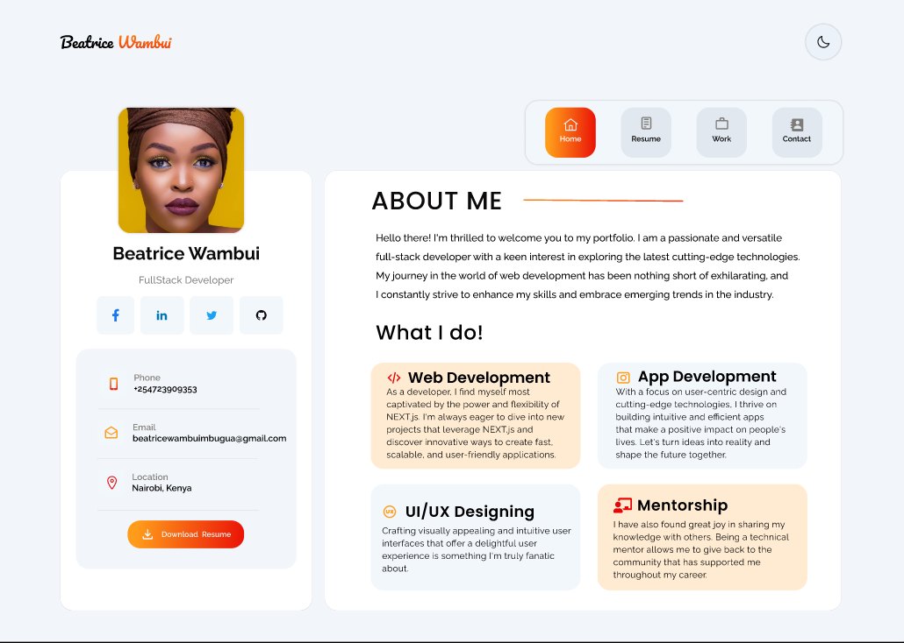
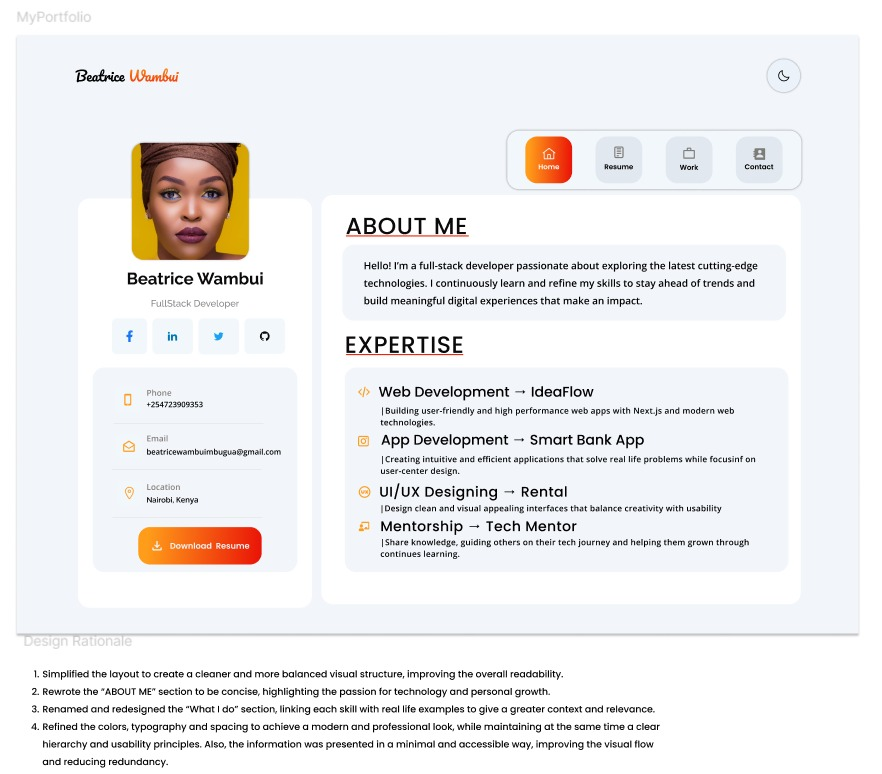

Week 2 Workshop
 Desing Rationale
1.Simplified the layout to create a cleaner and more balanced visual structure, improving the overall readability.
2.Rewrote the “ABOUT ME” section to be concise, highlighting the passion for technology and personal growth.
3.Renamed and redesigned the “What I do” section, linking each skill with real life examples to give a greater context and relevance.>
4.Refined the colors, typography and spacing to achieve a modern and professional look, while maintaining at the same time a clear hierarchy and usability principles. Also, the information was presented in a minimal and accessible way, improving the visual flow and reducing redundancy.
References:
Kennedy, E.(2024) The 4 Most-Common Design Portfolio Mistakes. Available at: https://www.learnui.design/blog/portfolio-mistakes.html (Accessed at: 21 October 2025)
Latin, M. (2024) Stop blaming the UX job market and fix your portfolio!.Available at: https://uxdesign.cc/stop-blaming-the-ux-job-market-and-fix-your-portfolio-afff5e673872 (Accessed:21 October 2025)
Nguyen, C. (2025)11 UX Portfolio Red Flags That Are Killing Your Career. Available at:https://uxchrisnguyen.medium.com/11-ux-portfolio-red-flags-that-are-killing-your-career-371635410996 (Accessed: 21 October 2025)